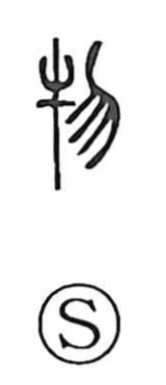

物

Kun: mono | On: butsu, motsu
thing ・ object
Explanation
物 is a phono-semantic character: 牛 (ox) contributes the sense—an ox being a paradigmatic “big thing” of early life—while 勿 supplies the sound (wù → butsu/motsu). In oracle-bone and bronze forms, 勿 depicts soil spattering from a plow, a sense echoed in its phonetic affinity with 撥 “to spatter.” The Book of Odes (Minor Odes, “No Sheep”) uses 物 in a line about victims of many colors being prepared for sacrifice, evoking herds and living creatures. In line with the Shuowen’s gloss “all things,” the character’s meaning broadened to denote “things” or “objects” in general.